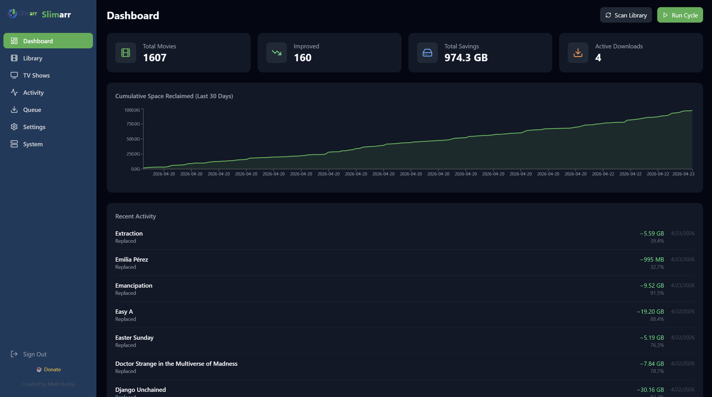
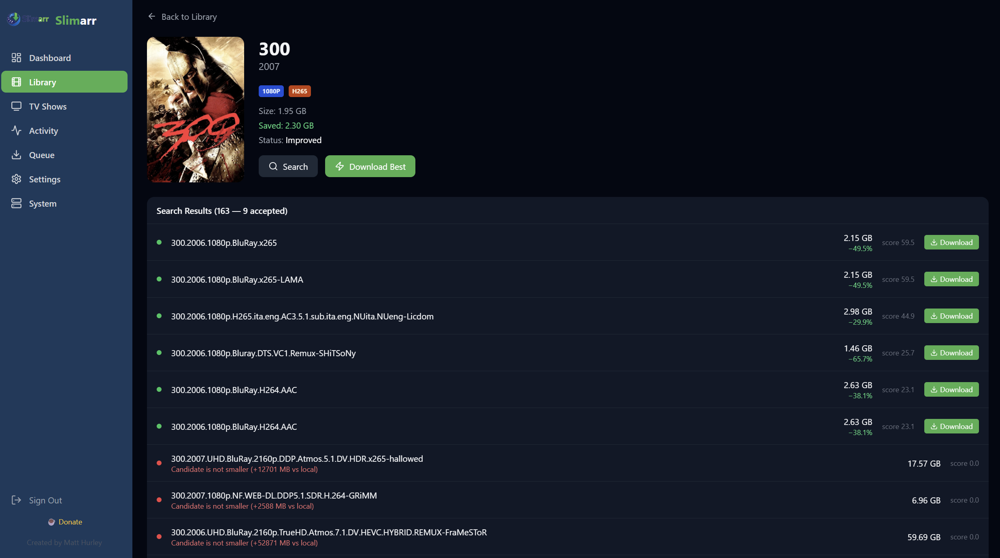
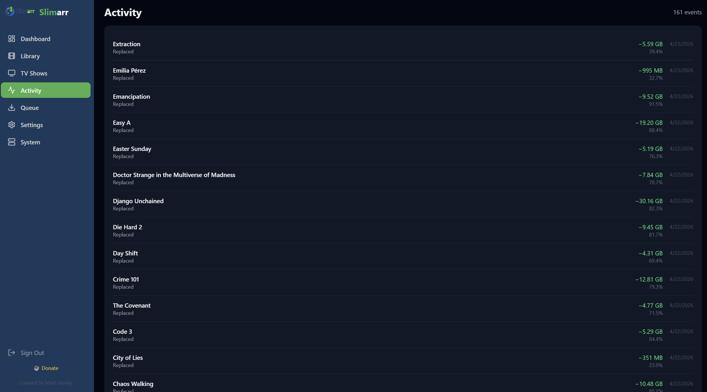
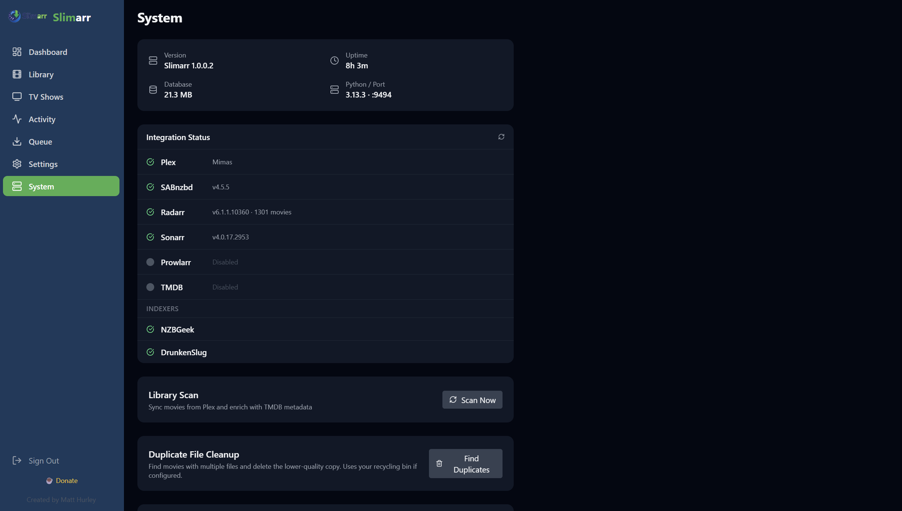

Nightly Replacement Cycles
Runs scheduled scans and replacements with strict size-reduction rules so your library keeps shrinking.
Plex Optimization Automation
Slimarr scans your Plex library, finds smaller Usenet releases, and safely replaces media while you sleep. Built to feel native in the *arr ecosystem.
Runs scheduled scans and replacements with strict size-reduction rules so your library keeps shrinking.
Works with SABnzbd and NZBGet, plus Prowlarr/Newznab indexers and optional Sonarr/Radarr connections.
Never increases file size. Optional recycling folder support adds a rollback-friendly safety net.
See queue progress, scan state, replacement savings, and system health from one dashboard.
Core workflow views from the Slimarr web app.




Slimarr is designed to work alongside your existing media stack: